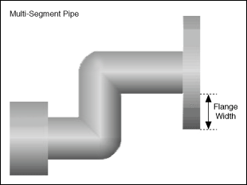

Short Name: Flange2Width
Requires: Base Development System
Class: MultiSegmentPipe Properties
To Use: Create a property.
Gets or sets the width of the flange that appears on the right end of a pipe network when you first place the Multi-Segment Pipe control on the front panel window.
The flange width is the distance, in pixels, from the edge of the adjoining pipe segment to the edge of the flange. The maximum flange width is 500 pixels. The minimum flange width is one pixel. LabVIEW returns an error if you specify a value greater than the maximum or less than the minimum flange width.
The following illustration shows the flange width.

You also can set the flange width interactively.
The following table lists the characteristics of this property.
| Data type | |
| Permissions | Read/Write |
| Available in Run-Time Engine | Yes |
| Available in Real-Time Operating System | Yes |
| Settable when the VI is running | Yes |
| Loads the front panel into memory | No |
| Need to authenticate before use | No |
| Loads the block diagram into memory | No |
| Remote access allowed | Yes |